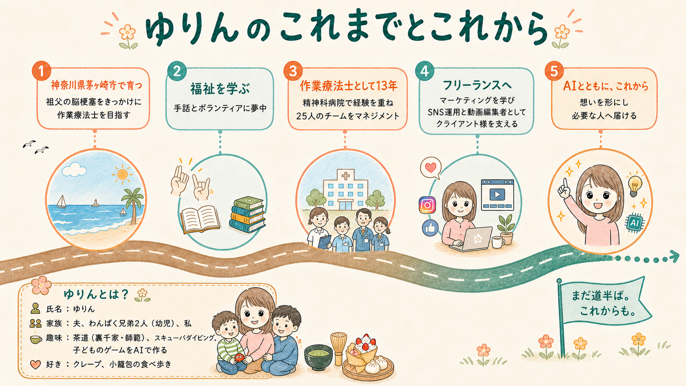

わかる言葉で進める
専門用語に頼らず同じ目線で確認しながら進めます。
プロフィール
困っている場面から
無理なく続く形を考えます。

AIを試してみたけれど仕事の中でどう使えばよいか分からない。
そんなときに業務を一緒に整理し今の仕事に合う無理なく続けられる形を考えます。
これまでの仕事
国家資格の作業療法士（リハビリ）として精神科病院で13年勤務し、うつ病や認知症の方の治療に携わってきました。
お話を丁寧にお聞きし根気よく伴走しながら無理なく続けられる形を一緒に考えることが強みです。
発信まわりの実務経験
作業療法士として培った聞く力・伴走する力を、発信の実務でも活かしてきました。
動画編集はクライアントワークとして半年ほど携わった実務経験があります。
YouTubeでは台本作成・撮影・編集・サムネイル・投稿までを自分で行い、ショート動画も投稿してきました。
LINE公式アカウントでは、ステップ配信などの導線設計にも取り組んできました。
ブログ記事は30記事以上執筆し、SEOを意識した記事で上位表示された経験もあります。
発信に関わることで気になる点があれば、お気軽にご相談ください。
まだ相談内容がまとまっていなくても大丈夫です。
どんな場面で止まっているかから一緒に言葉にしていきます。

大切にしていること
専門用語に頼らず同じ目線で確認しながら進めます。
新しい負担をなるべく増やさず今の仕事の中で続けられる方法を試しながら育てます。
AIは賢くても理想に近づくためのひとつの道具です。
あなたの仕事とお客様に合う方法を一番知っているのはあなたです。
良かった点も違和感も遠慮なく伝えてください。
その声をもとに一緒に改善していきます。